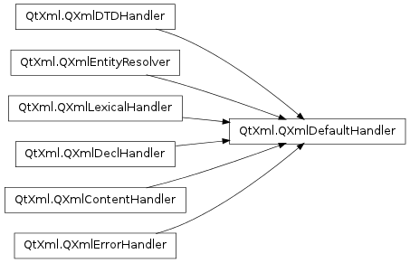

QXmlDefaultHandler ¶

Detailed Description ¶
The PySide.QtXml.QXmlDefaultHandler class provides a default implementation of all the XML handler classes.
This class gathers together the features of the specialized handler classes, making it a convenient starting point when implementing custom handlers for subclasses of PySide.QtXml.QXmlReader , particularly PySide.QtXml.QXmlSimpleReader . The virtual functions from each of the base classes are reimplemented in this class, providing sensible default behavior for many common cases. By subclassing this class, and overriding these functions, you can concentrate on implementing the parts of the handler relevant to your application.
The XML reader must be told which handler to use for different kinds of events during parsing. This means that, although PySide.QtXml.QXmlDefaultHandler provides default implementations of functions inherited from all its base classes, we can still use specialized handlers for particular kinds of events.
For example, PySide.QtXml.QXmlDefaultHandler subclasses both PySide.QtXml.QXmlContentHandler and PySide.QtXml.QXmlErrorHandler , so by subclassing it we can use the same handler for both of the following reader functions:
xmlReader . setContentHandler ( handler ) xmlReader . setErrorHandler ( handler )Since the reader will inform the handler of parsing errors, it is necessary to reimplement QXmlErrorHandler.fatalError() if, for example, we want to stop parsing when such an error occurs:
def fatalError(self, exception): qWarning("Fatal error on line %d, column %d:%s" % (exception.lineNumber(), exception.columnNumber(), exception.message()) return FalseThe above function returns false, which tells the reader to stop parsing. To continue to use the same reader, it is necessary to create a new handler instance, and set up the reader to use it in the manner described above.
It is useful to examine some of the functions inherited by PySide.QtXml.QXmlDefaultHandler , and consider why they might be reimplemented in a custom handler. Custom handlers will typically reimplement QXmlContentHandler.startDocument() to prepare the handler for new content. Document elements and the text within them can be processed by reimplementing QXmlContentHandler.startElement() , QXmlContentHandler.endElement() , and QXmlContentHandler.characters() . You may want to reimplement QXmlContentHandler.endDocument() to perform some finalization or validation on the content once the document has been read completely.
- class PySide.QtXml. QXmlDefaultHandler ¶
-
Constructs a handler for use with subclasses of PySide.QtXml.QXmlReader .